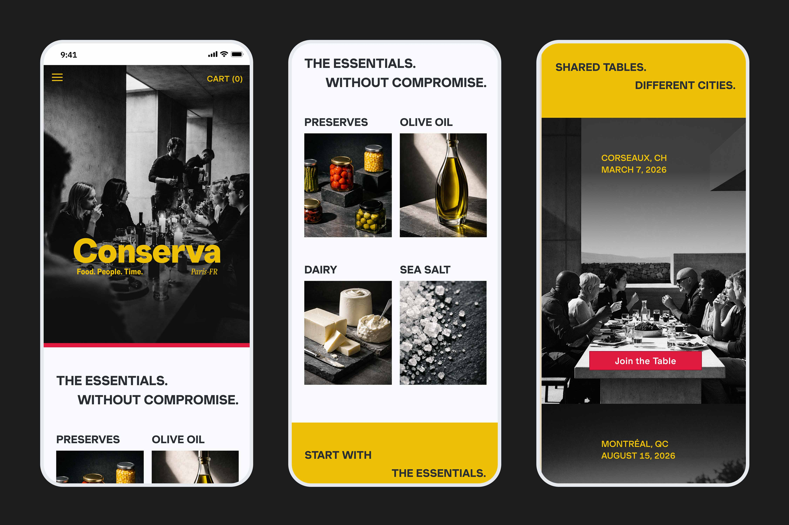

Conserva
Online shopping rarely feels like browsing anymore. It feels directed. Algorithms sort and suggest before we’ve decided what we want. When that guidance is thoughtful, it works. When it isn’t, it feels pushy.
Source: https://www.akeneo.com/blog/2026-ecommerce-trends/
Conserva explores that tension. I designed a bold, opinionated gourmet brand that stays expressive without becoming chaotic. The result is a high-fidelity e-commerce experience supported by a structured design system that protects clarity, consistency, and character.
Explore interactive prototypeEditorial still-life art direction created to explore Conserva’s visual language. Images were generated in Sora and guided by defined brand and system constraints.
Defining the Brand System
Bold · Graphic · Expressive · Confident · Opinionated
Conserva’s visual language is built on contrast and structure. Nothing is timid.
Type is large and assertive. Colour appears in saturated blocks. Subtle texture adds tactility without distraction. Hierarchy comes from scale and spacing, not decoration.
It feels contemporary, but controlled. Expressive, without losing discipline.
View the brand and UI moodboardsDesign System & UI Library
I built the system from the ground up using Atomic Design methodology, defining colour, type, spacing, and components first so decisions wouldn’t drift as the interface expanded.
The system defined:
- Semantic and brand colour usage
- WCAG-compliant contrast standards
- Component behaviour and interaction states
- Token-based spacing and typography rules
It functions as both foundation and guardrail. The brand stays bold without becoming noisy. The structure scales across iOS, Android, and web while maintaining a clear point of view.
Explore the Conserva Design SystemAccessibility matrix defining semantic colour usage and WCAG 2.1 AA–compliant contrast pairings across text, surfaces, and graphic elements.
Key Screens
Hero Section: The entry point is unapologetically brand-first: high contrast imagery, oversized type, and deliberate hierarchy. It signals this isn’t a neutral marketplace, it’s a perspective.
Categories: Modular groupings translate the system into something practical and scannable. Bold colour guides attention without competing with product content.
Events: Community lives inside the shop experience rather than beside it. Event highlights integrate seamlessly without disrupting structure or accessibility.
Shop Page: Browsing is structured, not chaotic. Modular layouts make comparison easy. Hierarchy and controlled contrast guide discovery without overwhelming it.
Item Detail Page: Information is layered deliberately with clear typographic hierarchy and accessible contrast. Brand accents frame the content instead of competing with it.
AI as a Creative Collaborator
I used AI as a controlled exploration tool, not a shortcut.
Rather than relying on stock imagery, I was excited to treat image generation as part of the visual system. Prompts were written to reflect Conserva’s language: high contrast, saturated colour, tactile texture, and graphic architectural composition.
Prompting as Structured Thinking
Before writing a prompt, I worked through a set of questions as I studied other images:
- What kind of image is this? (editorial still-life, product macro, lifestyle scene)?
- What are we looking at, and how is it placed in the scene?
- What textures or physical qualities must be visible?
- How is the scene lit?
- What colour (or colour relationships) matter most?
- How is the image composed?
- What should the image ultimately communicate?
A sample Sora prompt:
Editorial colour close-up of chopped lemons arranged directly on a dark stone surface. Lemon wedges and pieces are irregularly cut, showing textured rind and translucent pulp. Bright natural light creates sharp highlights and crisp shadows, emphasizing colour and form. Saturated yellow contrasts strongly against deep charcoal stone. Composition is tight and graphic, cropped for thumbnail use. Subtle filmic grain adds texture without softness. Modern, tactile, and design-led.
This turned prompting into structured thinking, and so, the outputs stayed visually coherent and repeatable.
These images are the result of constraint-led prompting. By defining lighting, texture, composition, and colour relationships upfront, the AI didn’t wander, it stayed aligned with the brand. The outputs reinforce the system instead of flattening it.
Prototyping
Interactions were defined at the component level. Carousel motion, button states, and transitions were standardized to maintain energy without visual noise.
Carousel behaviour, button states, and transition patterns were standardized across the system. The energy stays high. The experience stays controlled.

A motion foundation that defines animation curves by interaction intent. Timing and easing are tied to component behaviour, creating consistent pacing, reinforcing hierarchy, and keeping the brand’s expression intact.
Outcomes & Reflections
Working on Conserva reinforced the idea that structure doesn’t limit creativity, rather, it protects creativity.
When the system is clear, aesthetic drift disappears. Decisions feel grounded instead of arbitrary. Accessibility stops being a compliance step and starts strengthening the brand. Constraints, whether in spacing tokens or AI prompts, reduce hesitation and make the work more focused.
One tension became especially clear: expressive interfaces don’t have to be chaotic to feel bold. Impact comes from control. Contrast, texture, and hierarchy can carry intensity without noise.
Conserva reinforced that clarity isn’t the opposite of personality. It’s what allows personality to land.
Explore interactive prototype© 2025 Jennifer Yaya Falanga.